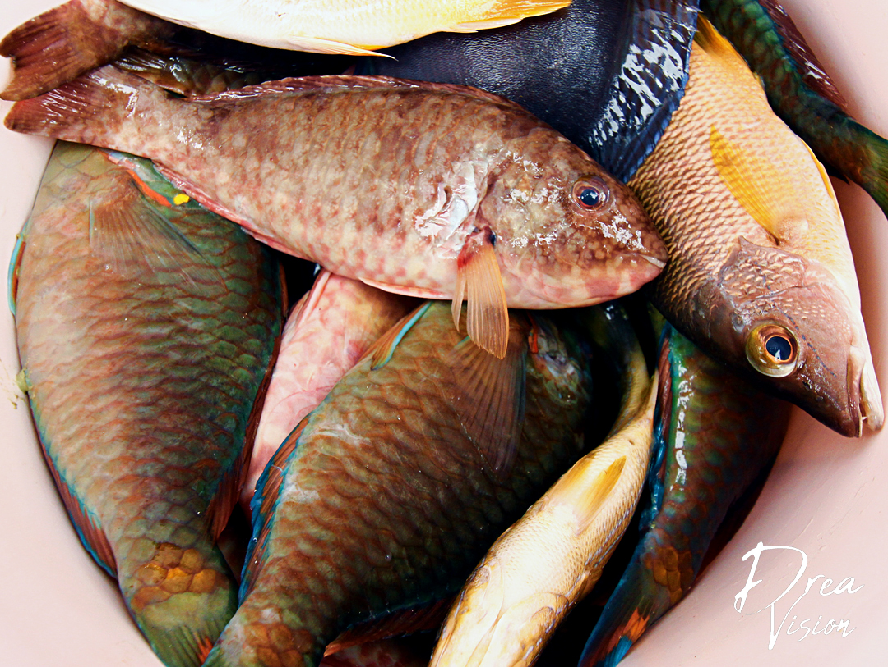

My grandmother was THE fish seller in the small, country town of Collington, Jamaica. Granny, an expert on all types of fish and the different ways to cook them made sure that fish was always on the dinner table. Parrot, Snapper, Doctor, Butter, Goat Fish; each class having its' own unique taste. However, the family favorite was and still is: Escovietch Fish.

Escovietch is considered a process of cooking where fish is seasoned, fried and then covered with a spicy and tangy sauce made with a mix of vinegar, whole pimento, peppers, onions, and carrots. It can be eaten more formally with rice and peas and your favorite vegetable. The best thing is that because it can last up to 5 days without refrigeration due to the pickling process, it can also be enjoyed as a fun snack. My grandmother would often eat this with water crackers and relished in every bite.
Check your fish with a knife to see if it has properly been scaled. Juice two limes using the liquid to “wash” your fish. Massage lime juice into fish and rinse well with cool water. Pat dry with a paper towel. With a very sharp knife, cut several slits across the belly of the fish on both sides and make one long slit in center of fish vertically. Season your fish with salt and pepper from the inside out. Stuff cavity of fish with thyme and scallion for added flavor.
Heat vegetable oil in a large frying pan. Check to make sure that fish is fully dry and add to hot oil cooking each side until it is brown and crispy. Remove fish from pan and drain excess oil on paper towel. Now it's time for the fun part! Take all the ingredients for the sauce and add to saucepan bringing mixture to a gentle simmer over medium heat. Simmer mixture according to how tender you want onions and peppers; anywhere between 3-6 minutes. Place fish on a platter and cover completely with sauce mixture. Allow to slightly cool and dig in!
Any remaining sauce can be stored in a glass jar and refrigerated for months. Also to really get the exquisite flavor of Escovietch fish, after pouring sauce on fish, allow to refrigerate overnight for optimal taste!